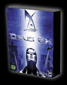

 Take a futuristic world of chaos, corruption, and nanotechnology. Bring it to life with one of the most advanced 3D engines available today, drop in a full-on role-playing skill system, cram in a massive arsenal of high-tech weapons and gadgets, a bevy of allies and enemies, and a conspiracy bent on world domination. What you get is an immersive roleplaying experience -- without the usual dragons, spells, and annoying little elves.
As if pointy-eared midgets would help you foil a hideous conspiracy, anyway.
Prepare yourself for Deus Ex, Ion Storm's heralded first-person role-playing game set in the gloomy not-so-distant future. Piece together the puzzle of an intricate terrorist scheme as J.C. Denton, a nano-technologically enhanced anti-terrorist agent who must discover the truth behind the world's most insidious conspiracy.
Keep your eye on this page for more information -- Deus Ex for Linux is in development!
New! If you would like to apply to beta test Deus Ex, fill out the application form here!
Take a futuristic world of chaos, corruption, and nanotechnology. Bring it to life with one of the most advanced 3D engines available today, drop in a full-on role-playing skill system, cram in a massive arsenal of high-tech weapons and gadgets, a bevy of allies and enemies, and a conspiracy bent on world domination. What you get is an immersive roleplaying experience -- without the usual dragons, spells, and annoying little elves.
As if pointy-eared midgets would help you foil a hideous conspiracy, anyway.
Prepare yourself for Deus Ex, Ion Storm's heralded first-person role-playing game set in the gloomy not-so-distant future. Piece together the puzzle of an intricate terrorist scheme as J.C. Denton, a nano-technologically enhanced anti-terrorist agent who must discover the truth behind the world's most insidious conspiracy.
Keep your eye on this page for more information -- Deus Ex for Linux is in development!
New! If you would like to apply to beta test Deus Ex, fill out the application form here!
Minimum System Requirements
Linux Kernel
2.2.x and glibc-2.1
Processor
300 MHz Pentium II or faster (500 MHz Pentium II processor recommended)
Video
8 MB Graphics Card ; XFree86 3.3.5 or higher (Glide), XFree86 4.x or higher (OpenGL®)
CD-ROM
8x CD-ROM drive (600 KB/s sustained transfer rate)
RAM
64 MB required; 192 MB recommended
Sound
16 bit Sound card ; OSS compatible
Hard disk
700 MB free hard disk space plus space for saved games